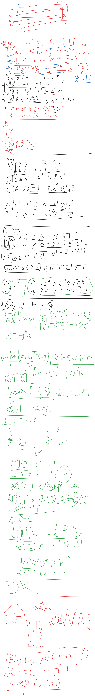

2026牛客暑期多校训练营05
数学/构造 场
A 回声前缀【后缀树】
Problem Description
Input file: standard input
Output file: standard output
Time limit: 4 seconds
Memory limit: 512 megabytes
给定一个长度为 的小写英文字母串 。字符串 固定不变。
每个位置 有一个非负权值 ，权值可以被修改。
对于一个非空字符串 ，定义它的回声值为
也就是说， 在 中每出现一次，就贡献该出现起点的当前权值。
处理 次操作：
1 i x：令 。2 p m：输出
3 p m k：求最小的 ，满足 且
若不存在这样的 ，输出 。
所有下标均从 开始。
Input
第一行包含两个整数 （）。
第二行包含一个长度为 的小写英文字母串 。
第三行包含 个整数 （）。
接下来 行，每行包含一次操作，格式为以下三种之一：
1 i x（，）2 p m（，）3 p m k（，，）
保证所有输出答案均不超过 。
Output
对于每个类型为 或 的操作，输出一行一个整数。
Sample Input
5 9
ababa
1 0 2 1 3
2 1 5
3 1 5 10
1 1 5
2 1 5
3 1 5 20
2 2 3
1 4 4
3 2 3 8
2 2 3Sample Output
14
3
34
3
2
2
8Hint
初始时，，。
对于 ，五个前缀分别为 ，它们的回声值分别为 。因此第一个答案为 。
对于询问 3 1 5 10， 时的前缀累计和依次为 ，所以答案为 。
将 后，上述五个回声值变为 ，所以 2 1 5 的答案为 。
Solution
【后缀树 上 RMQ 】【SA 构建后缀树】
后缀树 不失为处理 子串查询 的强有力数据结构
- 用到的后缀树的性质
- 压缩版的 Trie
- 压缩了二度节点
- 所有后缀节点都是叶子节点
- 一个叶子节点，对应一条链，一个后缀
- 一个字符串在后缀树上如果可以走过某一条路径，那么它所到达的端点子树的叶子个数，即为出现次数
- 原因：出现次数对应于各种后缀的前缀，因此该子树的叶子个数即为出现次数
- 两个叶子节点的 LCA 即为两个后缀的 LCP，
- 【这是很棒的一点】
- 因为如果单纯使用 Height 数组构建的笛卡尔树，非常难用，还需要判断排名相对大小，并且左端点+1
- 压缩版的 Trie
- 后缀树的 SA 构建原理
- 由于 SA 越相似的前缀，越容易排到连续的位置，
- 因此，lcp 扫描过程中，其长度是连续变化的
- 便于压缩构造 Trie 树
- 使用一个栈链，维护当前稻苗到的后缀的单链结构
- Height 表示的即为下一个后缀与当前栈链第一个不同的位置，便于快速定位、分叉
- （注意到）已经被弹出栈链的节点，不再有机会和后续的后缀合并
- 这也就对应了 lcp = rmq height
- 由于 SA 越相似的前缀，越容易排到连续的位置，
Code
#include<bits/stdc++.h>
using namespace std;
using ll = long long;
const int N = 2e5 + 5;
const int M = 1<<8;
// 【NEW】 SA 构建后缀树 无终止符 优雅 模板
namespace SufTree {
int sa[N*2], tsa[N], rk[N*2], trk[N*2], cnt[N], n,m,p;
int height[N];
string s;
void init(const string & _) {
s = _;
n = s.size();
m = M - 1;
p = 0;
for (int i = 1; i <= n; i++) cnt[rk[i]=s[i-1]]++;
for (int i = 1; i <= m; i++) cnt[i] += cnt[i-1];
for (int i = n; i >= 1; i--) sa[cnt[rk[i]]--] = i;
for (int w = 1; w <= n; w <<= 1, m=p) {
int cur = 0;
for (int i = n; i > n - w; i--) tsa[++cur] = i;
for (int i = 1; i <= n; i++) if (sa[i] > w) tsa[++cur] = sa[i] - w;
memset(cnt,0,sizeof(cnt[0]) * (m + 1));
for (int i = 1; i <= n; i++) cnt[rk[i]]++;
for (int i = 1; i <= m; i++) cnt[i] += cnt[i-1];
for (int i = n; i >= 1; i--) sa[cnt[rk[tsa[i]]]--] = tsa[i];
p = 0;
memcpy(trk,rk,sizeof(rk[0]) * (n+1));
for (int i = 1; i <= n; i++) {
p += trk[sa[i]] != trk[sa[i-1]] || trk[sa[i]+w] != trk[sa[i-1]+w];
rk[sa[i]] = p;
}
if (p == n) break;
}
}
// 【终于知道复杂度为什么这么低了】
// 想想 SufTree 的节点个数才 O(2n) 个
void get_height() {
for (int i = 1,h=0;i<=n;i++) {
if(rk[i]==1) h=0;
else {
if(h)h--;
int j = sa[rk[i]-1];
while(i+h<=n&&j+h<=n&&s[i+h-1]==s[j+h-1])h++;
}
height[rk[i]]=h;
}
}
// 【正片】
// 1-n 是后缀， >= n + 1 是中间节点
int fa[N*2], stk[N*2], tp, tot, len[N*2], root;
void build(const string& s) {
init(s);
get_height();
tot = n;
root = ++tot;
fa[root] = 0;
len[root] = 0;
stk[tp = 1] = root;
for (int i = 1; i <= n; ++i) {
int x = sa[i], h = height[i];
len[x] = n + 1 - x;
int last = 0;
while (len[stk[tp]] > h) last = stk[tp--];
int cur = stk[tp];
if (len[cur] < h) {
int z = ++tot;
len[z] = h;
fa[z] = cur;
if (last) fa[last] = z;
cur = z;
stk[++tp] = z;
} else if (cur <= n) {
int z = ++tot;
len[z] = h;
fa[z] = stk[tp - 1];
fa[cur] = z;
cur = z;
stk[tp] = z;
}
fa[x] = cur;
stk[++tp] = x;
}
}
}
int n, q;
string S;
ll a[N], sum[N];
vector<int> e[N*2];
int dfn[N*2], dfncnt, rnk[N*2], son[N*2], sz[N*2], fa[N*2], dep[N*2], top[N*2];
namespace SegTree{
// f 表示区间 a 之和 g 表示区间边长之和 h 表示区间 a * h 之和
ll f[N*8], g[N*8], h[N*8];
ll tag[N*8]; // tag 表示 区间加
void up(int i) {
f[i] = f[i*2] + f[i*2+1];
g[i] = g[i*2] + g[i*2+1];
h[i] = h[i*2] + h[i*2+1];
}
void build(int i,int l,int r) {
tag[i] = 0;
if (l == r) {
int u = rnk[l];
f[i] = sum[u];
g[i] = SufTree::len[u] - SufTree::len[fa[u]];
h[i] = f[i] * g[i];
} else {
int mid = (l + r) / 2;
build(i*2,l,mid);
build(i*2+1,mid+1,r);
up(i);
}
}
void lazy_add(int i,int n,ll v) {
tag[i] += v;
f[i] += n * v;
h[i] += v * g[i];
}
void down(int i,int ln,int rn) {
if(tag[i]) {
lazy_add(i*2,ln,tag[i]);
lazy_add(i*2+1,rn,tag[i]);
tag[i] = 0;
}
}
void add(int i,int l,int r,int jl,int jr,ll v) {
if (jl <= l && r <= jr) {
lazy_add(i,r-l+1,v);
} else {
int mid = (l + r) / 2;
down(i,mid-l+1,r-mid);
if(jl<=mid) add(i*2,l,mid,jl,jr,v);
if(jr>mid) add(i*2+1,mid+1,r,jl,jr,v);
up(i);
}
}
ll query_f(int i,int l,int r,int jl,int jr) {
if (jl <= l && r <= jr) {
return f[i];
} else {
ll res = 0;
int mid = (l + r) / 2;
down(i,mid-l+1,r-mid);
if (jl <= mid) res += query_f(i*2,l,mid,jl,jr);
if (jr > mid) res += query_f(i*2+1,mid+1,r,jl,jr);
return res;
}
}
ll query_g(int i,int l,int r,int jl,int jr) {
// 【坑点！！！】 在 upper_bound_g 调用它的时候，会出现 空集查询的情况，必须制止!
if(r<jl||l>jr) return 0;
if (jl <= l && r <= jr) {
return g[i];
} else {
ll res = 0;
int mid = (l + r) / 2;
if (jl <= mid) res += query_g(i*2,l,mid,jl,jr);
if (jr > mid) res += query_g(i*2+1,mid+1,r,jl,jr);
return res;
}
}
ll query_h(int i,int l,int r,int jl,int jr) {
if(r<jl||l>jr) return 0;
if (jl <= l && r <= jr) {
return h[i];
} else {
ll res = 0;
int mid = (l + r) / 2;
down(i,mid-l+1,r-mid);
if (jl <= mid) res += query_h(i*2,l,mid,jl,jr);
if (jr > mid) res += query_h(i*2+1,mid+1,r,jl,jr);
return res;
}
}
int upper_bound_g(int i,int l,int r,int jl,int jr,ll x) {
// cout << i << " " << l << " " << r << "\n";
if (l == r) return l;
int mid = (l + r) / 2;
down(i,mid-l+1,r-mid);
ll L = query_g(i*2,l,mid,jl,jr);
if (L <= x) {
x -= L;
return upper_bound_g(i*2+1,mid+1,r,jl,jr,x);
} else {
return upper_bound_g(i*2,l,mid,jl,jr,x);
}
}
int upper_bound_h(int i,int l,int r,int jl,int jr,ll x) {
if (l == r) return l;
int mid = (l + r) / 2;
down(i,mid-l+1,r-mid);
ll L = query_h(i*2,l,mid,jl,jr);
if (L < x) {
x -= L;
return upper_bound_h(i*2+1,mid+1,r,jl,jr,x);
} else {
return upper_bound_h(i*2,l,mid,jl,jr,x);
}
}
}
// 由于后缀树 都是查询/修改的 从叶子到根 的路径，所以一路往上跳
vector<array<int,2>> get_range(int x) {
vector<array<int,2>> res;
while(x) {
res.push_back({top[x], x});
x = fa[top[x]];
}
reverse(res.begin(), res.end());
return res;
}
// op1
void add(int x,ll v) {
auto lr = get_range(x);
for(auto [l,r]: lr)
SegTree::add(1,1,dfncnt,dfn[l], dfn[r], v);
}
// op2
ll query2(int x,int m) {
ll res = 0;
auto lr = get_range(x);
for (auto [l, r]: lr) {
ll tmp_g = SegTree::query_g(1,1,dfncnt,dfn[l],dfn[r]);
if (tmp_g <= m) {
m -= tmp_g;
res += SegTree::query_h(1,1,dfncnt,dfn[l],dfn[r]);
} else {
int y = rnk[SegTree::upper_bound_g(1,1,dfncnt,dfn[l],dfn[r],m)];
if(y != top[y]) {
int fy = fa[y];
if(dep[fy] >= dep[l]) {
tmp_g = SegTree::query_g(1,1,dfncnt,dfn[l],dfn[fy]);
m -= tmp_g;
res += SegTree::query_h(1,1,dfncnt,dfn[l],dfn[fy]);
}
}
ll f = SegTree::query_f(1,1,dfncnt,dfn[y],dfn[y]);
res += f * m;
break;
}
}
return res;
}
// op3
int query3(int x,int m,ll k) {
int t = 0;
auto lr = get_range(x);
for (auto [l, r]: lr) {
ll tmp_h = SegTree::query_h(1,1,dfncnt,dfn[l],dfn[r]);
if (tmp_h < k) {
k -= tmp_h;
t += SegTree::query_g(1,1,dfncnt,dfn[l],dfn[r]);
} else {
int y = rnk[SegTree::upper_bound_h(1,1,dfncnt,dfn[l],dfn[r],k)];
if (y != top[y]) {
int fy = fa[y];
if(dep[fy] >= dep[l]) {
tmp_h = SegTree::query_h(1,1,dfncnt,dfn[l],dfn[fy]);
k -= tmp_h;
t += SegTree::query_g(1,1,dfncnt,dfn[l],dfn[fy]);
}
}
ll f = SegTree::query_f(1,1,dfncnt,dfn[y],dfn[y]);
// if(!f) return 0;
ll rm = (k-1) / f;
t += rm + 1;
k = -1;
break;
}
}
return k == -1 && t <= m ? t : 0;
}
void dfs1(int u) {
sz[u] = 1;
sum[u] = u <= n ? a[u] : 0;
for (auto v: e[u]) {
fa[v] = u;
dep[v] = dep[u] + 1;
dfs1(v);
sum[u] += sum[v];
sz[u] += sz[v];
if (sz[son[u]] < sz[v]) {
son[u] = v;
}
}
}
void dfs2(int u,int tp) {
dfn[u] = ++dfncnt;
rnk[dfncnt] = u;
top[u] = tp;
if(son[u]) dfs2(son[u], tp);
for (auto v: e[u]) if (v!=son[u]) dfs2(v, v);
}
void solve() {
cin >> n >> q;
cin >> S;
for (int i = 1; i <= n; i++) cin >> a[i];
SufTree::build(S);
for (int i = 1; i <= SufTree::tot; i++) e[SufTree::fa[i]].push_back(i);
dfs1(SufTree::root);
dfs2(SufTree::root,SufTree::root);
SegTree::build(1,1,dfncnt);
for (int i = 1; i <= q; i++) {
int op;
cin >> op;
if (op == 1) {
int i, x;
cin >> i >> x;
add(i, x - a[i]);
a[i] = x;
} else if(op == 2) {
int p, m;
cin >> p >> m;
cout << query2(p, m) << "\n";
} else {
int p, m;
ll k;
cin >> p >> m >> k;
cout << query3(p, m, k) << "\n";
}
}
}
int main() {
ios::sync_with_stdio(0); cin.tie(0); cout.tie(0);
int T = 1;
// cin >> T;
while (T--) solve();
}B 放大的徽章【闵可夫斯基和 / Pick 定理】
Problem Description
- Input file: standard input
- Output file: standard output
- Time limit: 3 seconds
- Memory limit: 512 megabytes
平面上给定两个有限格点集合 和 。设 ， 分别为它们的凸包。输入中可能包含重复点。
对于一个正整数 ，将 关于原点放大 倍，得到多边形 。
如果整数向量 使得平移后的多边形 与 至少有一个公共点，则称 是合法的。边界相交也算相交。
对于每个询问 ，求合法整数向量 的数量，并对 取模。
Input
第一行包含三个整数 （，），分别表示 中点的个数、 中点的个数和询问次数。
接下来 行，每行包含两个整数 （），表示 中的一个点。
接下来 行，每行包含两个整数 （），表示 中的一个点。
接下来 行，每行包含一个整数 （），表示一次询问。
保证 和 的面积均为正。
Output
对于每个询问，输出一行一个整数，表示合法整数向量的数量对 取模的结果。
Sample Input
6 5 4
0 0
2 0
2 1
0 1
1 0
1 1
0 0
3 0
1 2
0 1
1 1
1
2
5
10Sample Output
20
36
108
308Hint
在样例中， 是顶点为 的矩形， 是顶点为 的四边形。
可以算出 ，，，，且 。因此询问 的答案为
代入 ，答案分别为 。
Solution
- 知道闵可夫斯基和
- 但是忘了 Pick 定理可以用（还以为这一题不是整数格点）
- 但是完全不知道，一个动态闵可夫斯基凸包的边，用多项式就能表达格点数量？！
- 完全没想到：动态 Minkowski 凸包的格点数，能压成一个关于 的多项式。
① 建模：Minkowski 和
答案 = 凸多边形 内的格点数。
② 求格点数：Pick 定理
其中 为二倍面积， 为边界格点数（不是几何边长）。
③ 关键： 的面积和边界格点都能拆
代入 Pick 定理 → 答案是关于 的二次多项式， 回答每次询问。
-
易混淆点： 是格点数，不是边长（虽然放边长上去依然成立）
- 成立，靠的不是"长度可加"，而是：
- 不同向的边各自保留，贡献不变。
- 同向边合并时， 恰好可加
- 成立，靠的不是"长度可加"，而是：
-
计算流程
- 对 、 求凸包。
- 算 。
- 求一次 Minkowski 和 （极角归并，）。
- 算 ，得 。
- 每次询问代入多项式，模 。
面积为什么是 ？（最抽象）
你拿 沿着 滑一圈，扫出来的面积，直觉上分三块：
| 部分 | 来源 | 为什么 |
|---|---|---|
| 自己的面积 | 起点那块 | |
| 自己的面积 | 放大 倍，面积变 倍（二维） | |
| 两者"混合"出来的面积 | 滑动过程中， 的边和 的边"交叉"扫出来的，跟 成正比（一维×一维） |
就是个常数，代表 和 的形状有多"不搭"。你只需要算一次 （ 的情况），反推出 就行了。
边界格点为什么是 ？（可以理解）
Minkowski 和的边界 = 把两个多边形的边向量按方向排好序，拼起来。
- 的边：原封不动贡献 个格点。
- 的边：每条边放大了 倍。一条边上有 个格点，放大 倍后变成 。
所以 的边界格点就是 ，加起来就完事了。
Code
#include<bits/stdc++.h>
using namespace std;
using LL = long long;
using LLL = __int128;
const int N = 2e5 + 5;
const LL mod = 998244353, inv2 = (mod + 1) / 2;
struct Vec;
struct Vec{
LL x,y;
double angle;
Vec(LL x=0,LL y=0):x(x),y(y){
angle = atan2(y, x);
}
Vec operator+(Vec o) const { return Vec(x+o.x,y+o.y);}
Vec& operator+=(Vec o) { x+=o.x; y+=o.y; return *this;}
Vec operator-(Vec o) const { return Vec(x-o.x,y-o.y);}
Vec operator-() const { return Vec(-x,-y);}
Vec operator*(LL k) const { return Vec(x*k,y*k);}
LLL operator%(Vec o) const {
return (LLL)x*o.y - (LLL)y*o.x;
}
// 【坑点2：极角排序需要使用极角】
bool operator<(const Vec& o) const {
// return *this % o > 0;
return angle < o.angle;
}
friend istream& operator>>(istream& in, Vec& o) {
return in >> o.x >> o.y;
}
friend ostream& operator<<(ostream& os, Vec& o) {
return os << "Vec:" << o.x << ", " << o.y;
}
};
int n, m, q;
int cnt;
Vec P[N], Q[N], C[N*2], R[N*2], tmp[N];
LL sk[3], bk[2];
// 【坑点1：[-1e9, 1e9] 算面积二倍要开 i128 】
LLL S2(Vec* A, int n) {
LLL res = 0;
for(int i = 1;i<=n;i++) res += A[i+1] % A[i];
return res < 0 ? -res:res;
}
// 【坑点3：闵可夫斯基和 + Andrew 都建议传入 1..n 并使用 1..n+1 并返回 B[1..n]】
void minkowski(Vec* A, int n, Vec* B) {
sort(A+1,A+1+n);
B[1] = {0,0};
for(int i = 2; i<=n+1;i++) {
B[i] = B[i-1] + A[i-1];
// cout << A[i-1] << "!\n";
}
// for(int i = 1;i<=n+1;i++) {
// cout << B[i] << "\n";
// }
}
int Andrew(Vec* A, int n,Vec* B) {
sort(A+1,A+1+n,[](Vec& a,Vec& b){
return a.x != b.x ? a.x < b.x: a.y < b.y;
});
int tp = 0;
for (int i = 1;i <= n;i++) {
while(tp >= 2 && (B[tp]- B[tp-1]) % (A[i] - B[tp]) <= 0) tp--;
B[++tp] = A[i];
}
int tp2 = tp;
for(int i = n;i>=1;i--) {
while(tp2 >= tp + 1 && (B[tp2]-B[tp2-1]) % (A[i] - B[tp2]) <= 0) tp2--;
B[++tp2] = A[i];
}
return tp2-1;
}
void solve() {
cin >> n >> m >> q;
cnt = 0;
for(int i = 1; i <= n; i++) cin >> P[i];
for(int i = 1; i <= m; i++) cin >> Q[i];
n = Andrew(P, n, tmp);
memcpy(P, tmp, sizeof(Vec) * (n+1));
P[n+1] = P[1];
m = Andrew(Q, m, tmp);
memcpy(Q, tmp, sizeof(Vec) * (m+1));
Q[m+1] = Q[1];
// for(int i = 1; i <= n;i++) cout << P[i] << "!!\n";
// for(int i = 1; i <= m;i++) cout << Q[i] << "!!!\n";
for(int i = 1;i<=n;i++) C[++cnt] = P[i] - P[i+1];
for(int i = 1;i<=m;i++) C[++cnt] = Q[i+1] - Q[i];
minkowski(C, cnt, R);
sk[2] = S2(P, n) % mod;
sk[1] = ((S2(R, cnt) - S2(P, n) - S2(Q, m)) % mod + mod) % mod;
sk[0] = S2(Q, m) % mod;
for(int i = 1;i<=n;i++) {
Vec D = P[i+1] - P[i];
(bk[1] += gcd(abs(D.x), abs(D.y))) %= mod;
}
for(int i = 1;i<=m;i++) {
Vec D = Q[i+1] - Q[i];
(bk[0] += gcd(abs(D.x), abs(D.y))) %= mod;
}
while(q--) {
LL k;
cin >> k;
// 【坑点4：开门爆】
k %= mod;
LL res = (
sk[0]+sk[1]*k%mod+sk[2]*k%mod*k%mod
+ bk[0] + bk[1] * k % mod + 2
) % mod * inv2 % mod;
cout << res << "\n";
}
}
int main() {
// cout << "啥阴（闵可夫斯基和之后的面积爆了）：" << ((4e9 * 4e9 * 2) > LONG_LONG_MAX) << "\n";
ios::sync_with_stdio(0); cin.tie(0); cout.tie(0);
int T = 1;
// cin >> T;
while (T--) solve();
}C 数字游戏【构造】
Problem Description
- Input file: standard input
- Output file: standard output
- Time limit: 1 second
- Memory limit: 256 megabytes
给定一个正整数进制 。
你需要构造三个长度为 的排列 （即每个序列恰好包含 到 每个数字一次）。
定义一个序列 在 进制下表示的整数为
注意序列允许以数字 开头，因此表示的整数可以小于 。
请你构造三个排列 ，使得它们满足等式（注意加法是在 进制下的加法）
并且对于每个位置 （）， 两两不同。
如果不存在这样的构造，请输出 。
Input
输入仅一行，包含一个整数 （）。
Output
如果存在合法构造，则输出三行，每行 个整数，分别表示序列 中的数字，数字之间用空格分隔。
如果不存在合法构造，则输出一行 。
若存在多种构造，输出任意一种即可。
Sample Input
样例 1：
5样例 2：
6Sample Output
样例 1：
-1样例 2：
4 2 5 0 3 1
0 4 1 2 5 3
5 1 0 3 2 4Hint
。
Solution
数学场典型计算方式：
- 整体求和得到不变量性质
- 即 将每一位的 求和
- 再利用天然整除约束得出约束条件
- 奇偶数重排的加法性质
- 奇数+奇数=偶数集+进位
- 偶数+偶数=偶数集+进位
- 由此通过偶数+进位可得奇数集
- 循环移位后加法的进位性质
- 很有规律，天然规律

Code
#include<bits/stdc++.h>
using namespace std;
const int N = 1e6 + 5;
int n;
void solve() {
cin >> n;
// cout << n << "\n";
if ((n&1) || n == 2) cout << -1 << "\n";
else if(n == 4){
cout << "1 3 0 2\n0 1 2 3\n2 0 3 1\n";
} else {
vector<vector<array<int,3>>> nom(n),pls(n);
for(int i = 0;i<n;i+=2) {
int a = i, b = (i - 2 + n) % n;
int c = (a + b) % n, car = (a + b) / n;
if (car) {
pls[c].push_back({a, b, c});
} else {
nom[c].push_back({a, b, c});
}
}
for(int i = 1;i<n;i+=2) {
int a = i, b = (i - 2 + n) % n;
int c = (a + b) % n, car = (a + b) / n;
if (car) {
pls[c].push_back({a, b, c});
} else {
nom[c].push_back({a, b, c});
}
}
vector<array<int,3>> ans(n);
int i = 0;
assert(nom[n-2].size()==2);
assert(pls[0].size()==2);
ans[i++] = nom[n-2][1];
nom[n-2][0][2]++;
ans[i++] = nom[n-2][0];
pls[0][0][2]++;
ans[i++] = pls[0][0];
ans[i++] = pls[0][1];
for(int j = 2;j<n-2;j+=2) {
assert(nom[j].size() == 1);
assert(pls[j].size() == 1);
nom[j][0][2]++;
ans[i++] = nom[j][0];
ans[i++] = pls[j][0];
}
for(int i = 2;i<n;i+=2) {
if(ans[i][0] == ans[i][2] || ans[i][1] == ans[i][2]) {
swap(ans[i], ans[i+1]);
swap(ans[i][2], ans[i+1][2]);
}
}
for(int j =0;j<3;j++) {
for(int i = 0;i<n;i++) {
cout << ans[i][j] << " ";
}cout << "\n";
}
}
}
int main() {
ios::sync_with_stdio(0); cin.tie(0); cout.tie(0);
int T = 1;
// cin >> T;
while (T--) solve();
}附对拍代码
PS：system() 函数的返回值原来是子程序的返回值，这样 check 就不需要 diff 或者 fc 了
// gen.cpp
#include<bits/stdc++.h>
using namespace std;
mt19937 rng(chrono::steady_clock().now().time_since_epoch().count());
int main() {
cout << (rng() % 1000)*2 + 4;
}// check.cpp
#include<bits/stdc++.h>
using namespace std;
mt19937 rng(chrono::steady_clock().now().time_since_epoch().count());
int n;
int main() {
cin >> n;
vector<int> a(n), b(n), c(n), cc(n+1);
for(int i = 0;i<n;i++) cin >> a[n-1-i];
for(int i = 0;i<n;i++) cin >> b[n-1-i];
for(int i = 0;i<n;i++) cin >> c[n-1-i];
for(int i = 0;i<n;i++) {
cc[i] += a[i] + b[i];
cc[i+1] += cc[i] / n;
cc[i] %= n;
}
vector<int> cnt;
cnt.assign(n, 0);
for(int i = 0;i<n;i++) {
if(++cnt[a[i]] == 2) return 1;
}
cnt.assign(n, 0);
for(int i = 0;i<n;i++) {
if(++cnt[b[i]] == 2) return 1;
}
cnt.assign(n, 0);
for(int i = 0;i<n;i++) {
if(++cnt[c[i]] == 2) return 1;
}
for(int i = 0;i<n;i++) {
if(a[i] == b[i] || a[i] == c[i] || b[i] == c[i]) return 1;
}
for(int i = 0;i<n;i++) if(cc[i]!=c[i]) return 1;
cout << "OK\n";
return 0;
}// test.cpp
#include<bits/stdc++.h>
using namespace std;
int main() {
system("g++ -std=c++20 gen.cpp -o gen.o");
system("g++ -std=c++20 C.cpp -o C.o");
system("g++ -std=c++20 check.cpp -o check.o");
while(1) {
system("gen.o > in.txt");
system("C.o < in.txt > out.txt");
if(system("check.o < out.txt")) {
cout << "WA\n";
break;
}
}
}[^1]: